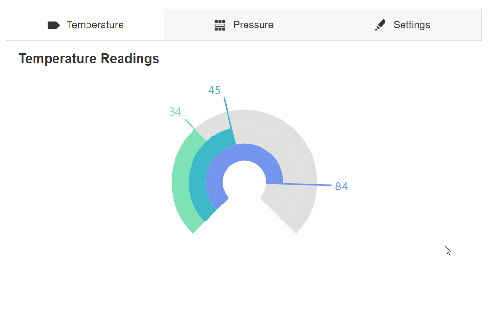
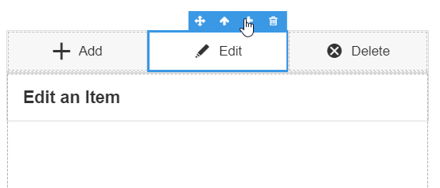
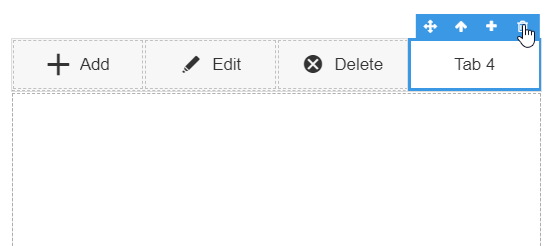
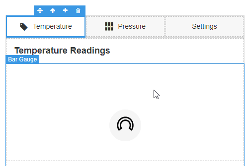
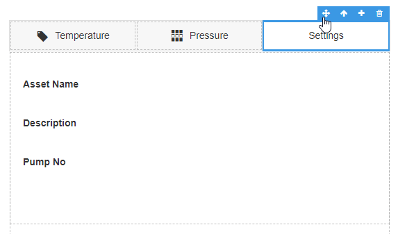
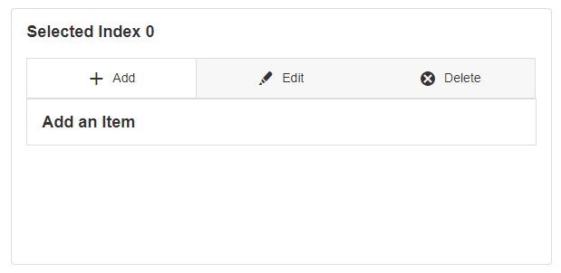
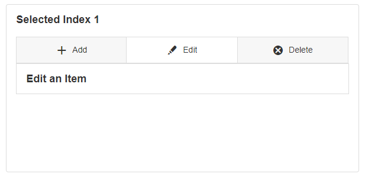
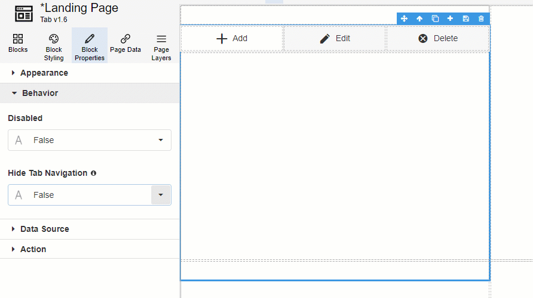

Tabs
Tabs are Blocks that allow you to separate and view related items together. Tabs can be added or removed to the tab Block if needed. They are useful for creating sections that the user can switch between or grouping related groups into one area of the page.

Adding a Tab
To add a new Tab, select the whole tab Block or an individual Tab and click on the plus symbol in the top-right hand Block toolbar.

Deleting a Tab
To delete a Tab, select the whole Tab Block or an individual Tab and click on the bin symbol in the top-right hand Block toolbar.

Navigating Between Tabs
You can navigate between the Tabs within the canvas itself. Click on each Tab to open the contents within that particular Tab.

Reordering Tabs
Tabs can be reordered by clicking and dragging them to change the order. When a Tab is highlighted, hold the move icon and drag the Tab to another location within the Block.

Tab Properties
Appearance
Common Properties
Tabs have properties that are common to most Blocks: visibility and tooltip.
See the Common Properties article for more details on common appearance properties.
Selected Index
The selected index determines which tab is open by default. The index starts from 0, which means that an index of 0 refers to the first Tab, an index of 1 refers to the second Tab, and so on.


Behavior
Common Properties
The disabled property is common to most Blocks;
See the Common Properties article for more details on common behavior properties.
Hide Tab Navigation
When enabled, a hidden icon appears to the left of the tab icon and name on the Canvas. The user will see the selected tab's content at runtime, but they cannot see the tabs or click on another tab.
The navigation between tabs is controlled by the Selected Index property, e.g. by an expression.

Note
This is useful when a header or footer section is reused across multiple pages. For example, one page is used in three different drill-down scenarios. The top one-third differs based on the drill-down type and the bottom two-thirds is the same for all scenarios.
Rather than cloning the page and maintaining all three, place the top one-third in a Tab Block - and set the Selected Index to a parameter passed from the previous page to control which tab's content is shown.
Data Source
Common Properties
Tabs have properties that are common to most Blocks: filter, sort, show # of results, and skip # of results;
See the Common Properties article for more details on common Data Source properties.
Tab Item Properties
Appearance
Title and Icon
Each Tab has a heading that labels that particular tab section. An icon can also be added for visual purposes.
Last modified: May 24, 2025